용접기능사 (2015-01-25 기출문제)
1과목: 용접일반
1. 불활성 가스 텅스텐 아크용접(TIG)의 KS 규격이나 미국용접협회(AWS)에서 정하는 텅스텐 전극봉의 식별 색상이 황색이면 어떤 전극봉인가?
- 순텅스텐
- 지르코늄 텅스텐
- 1% 토륨 텅스텐
- 2% 토륨 텅스텐
(정답률: 62%)

2. 서브머지드 아크 용접의 다전극 방식에 의한 분류가 아닌 것은
- 푸시식
- 텐덤식
- 횡병렬식
- 횡직렬식
(정답률: 78%)
3. 다음 중 정지 구멍(Stop hole)을 뚫어 결함 부분을 깎아내고 재용접해야하는 결함은?
- 균열
- 언더컷
- 오버랩
- 용입부족
(정답률: 71%)
4. 다음 중 비파괴 시험에 해당하는 시험은?
- 굽힘 시험
- 현미경 조직 시험
- 파면 시험
- 초음파 시험
(정답률: 82%)
5. 산업용 로봇 중 직각 좌표계 로봇의 장점에 속하는 것은?
- 오프라인 프로그래밍이 용이하다.
- 로봇 주위에 접근이 가능하다.
- 1개의 선형축과 2개의 회전축으로 이루어졌다.
- 작은 설치공간에 큰 작업영역이다.
(정답률: 61%)
6. 용접 후 변형 교정시 가열 온도 500~600℃, 가열 시간 약 30초, 가열 지름 20~30mm로 하여 가열한 후 즉시 수냉하는 변형 교정법을 무엇이라 하는가?
- 박판에 대한 수냉 동판법
- 박판에 대한 살수법
- 박판에 대한 수냉 석면포법
- 박판에 대한 점 수축법
(정답률: 50%)
7. 용접 전의 일반적인 준비 사항이 아닌 것은?
- 사용 재료를 확인하고 작업 내용을 검토한다.
- 용접전류, 용접 순서를 미리 정해둔다.
- 이음부에 대한 불순물을 제거한다.
- 예열 및 후열처리를 실시한다.
(정답률: 81%)
8. 금속간의 원자가 접합하는 인력 범위는?
- 10-4cm
- 10-6cm
- 10-8cm
- 10-10cm
(정답률: 76%)
9. 불활성 가스 금속 아크 용접(MIG)에서 크레이터 처리에 의해 낮아진 전류가 서서히 줄어들면서 아크가 끊어지는 기능으로 용접부가 녹아내리는 것을 방지하는 제어 기능은?
- 스타트 시간
- 예비 가스 유출 시간
- 버언 백 시간
- 크레이터 충전 시간
(정답률: 77%)
10. 다음 중 용접용 지그 선택의 기준으로 적절하지 않은 것은?
- 물체를 튼튼하게 고정시켜 줄 크기와 힘이 있을 것
- 변형을 막아줄 만큼 견고하게 잡아줄 수 있을 것
- 물품의 고정과 분해가 어렵고 청소가 편리할 것
- 용접 위치를 유리한 용접 자세로 쉽게 움직일 수 있을 것
(정답률: 86%)
11. 다음 중 테르밋 용접의 특징에 관한 설명으로 틀린 것은?
- 전기가 필요없다.
- 용접 작업이 단순하다.
- 용접 시간이 길고 용접 후 변형이 크다.
- 용접 기구가 간단하고 작업 장소의 이동이 쉽다.
(정답률: 80%)
12. 서브머지드 아크 용접에 대한 설명으로 틀린 것은?
- 가시 용접으로 용접시 용착부를 육안으로 식별이 가능하다.
- 용융속도와 용착속도가 빠르며 용입이 깊다.
- 용착금속의 기계적 성질이 우수하다.
- 개선각을 작게 하여 용접 패스 수를 줄일 수 있다.
(정답률: 70%)
13. 다음 중 용접 설계상 주의해야 할 사항으로 틀린 것은?
- 국부적으로 열이 집중되도록 할 것
- 용접에 적합한 구조의 설계를 할 것
- 결함이 생기기 쉬운 용접 방법은 피할 것
- 강도가 약한 필릿 용접은 가급적 피할 것
(정답률: 77%)
14. 이산화탄소 아크 용접법에서 이산화탄소(CO2)의 역할을 설명한 것 중 틀린 것은?
- 아크를 안정시킨다.
- 용융금속 주위를 산성 분위기로 만든다.
- 용융속도를 빠르게 한다.
- 양호한 용착금속을 얻을 수 있다.
(정답률: 40%)
15. 이산화탄소 아크 용접에 관한 설명으로 틀린 것은?
- 팁과 모재간의 거리는 와이어의 돌출 길이에 아크 길이를 더한 것이다.
- 와이어 돌출길이가 짧아지면 용접 와이어의 예열이 많아진다.
- 와이어의 돌출길이가 짧아지면 스패터가 부착되기 쉽다.
- 약 200A 미만의 저전류를 사용할 경우 팁과 모재 간의 거리는 10~15mm 정도 유지한다.
(정답률: 46%)
16. 강구조물 용접에서 맞대기 이음의 루트 간격의 차이에 따라 보수 용접을 하는데 보수방법으로 틀린 것은?
- 맞대기 루트 간격 6mm 이하일 때에는 이음부의 한쪽 또는 양쪽을 덧붙임 용접한 후 절삭하여 규정 간격으로 개선 홈을 만들어 용접한다.
- 맞대기 루트 간격 15mm 이상일 때에는 판을 전부 또는 일부(대략 300mm) 이상의 폭)을 바꾼다.
- 맞대기 루트 간격 6~15mm일 때에는 이음부에 두께 6mm 정도의 뒷댐판을 대고 용접한다.
- 맞대기 루트 간격 15mm 이상일 때에는 스크랩을 넣어서 용접한다.
(정답률: 48%)
17. 용접 시공시 발생하는 용접 변형이나 잔류응력의 발생을 줄이기 위해 용접시공 순서를 정한다. 다음 중 용접시공 순서에 대한 사항으로 틀린 것은?
- 제품의 중심에 대하여 대칭으로 용접을 진행시킨다.
- 같은 평면 안에 많은 이음이 있을 때에는 수축은 가능한 자유단으로 보낸다.
- 수축이 적은 이음을 가능한 먼저 용접하고 수축이 큰 이음을 나중에 용접한다.
- 리벳작업과 용접을 같이 할 때는 용접을 먼저 실시하여 용접열에 의해서 리벳의 구멍이 늘어남을 방지한다.
(정답률: 73%)
18. 용접 작업시의 전격에 대한 방지 대책으로 올바르지 않은 것은?
- TIG 용접시 텅스텐 봉을 교체할 때는 전원 스위치를 차단하지 않고 해야 한다.
- 습한 장갑이나 작업복을 입고 용접하면 감전의 위험이 있으므로 주의한다.
- 절연홀더의 절연 부분이 균열이나 파손되었으면 곧바로 보수하거나 교체한다.
- 용접 작업이 끝났을 때나 장시간 중지할 때에는 반드시 스위치를 차단시킨다.
(정답률: 86%)
19. 단면적이 10cm2의 평판을 완전 용입 맞대기 용접한 경우의 견디는 하중은 얼마인가? (단, 재료의 허용응력을 1600kgf/cm2로 한다.)
- 160kgf
- 1600kgf
- 16000 kgf
- 16kgf
(정답률: 60%)
20. 용접 길이가 짧거나 변형 및 잔류응력의 우려가 적은 재료를 용접할 경우 가장 능률적인 용착법은?
- 전진법
- 후진법
- 비석법
- 대칭법
(정답률: 52%)
21. 다음 중 아세틸렌(C2H2) 가스의 폭발성에 해당되지 않는 것은?
- 406~408℃가 되면 자연 발화한다.
- 마찰, 진동, 충격 등의 외력이 작용하면 폭발 위험이 있다.
- 아세틸렌 90%, 산소 10%의 혼합시 가장 폭발 위험이 크다.
- 은, 수은 등과 접촉하면 이들과 화합하여 120℃ 부근에서 폭발성이 있은 혼합물을 생성한다.
(정답률: 66%)
22. 스터드 용접의 특징 중 틀린 것은?
- 긴 용접 시간으로 용접 변형이 크다.
- 용접 후의 냉각 속도가 비교적 빠르다.
- 알루미늄, 스테인리스강 용접이 가능하다.
- 탄소 0.2%, 망간 0.7% 이하시 균열 발생이 없다.
(정답률: 61%)
23. 연강용 피복 아크 용접봉 중 저수소계 용접봉을 나타내는 것은?
- E 4301
- E 4311
- E 4316
- E 4327
(정답률: 79%)
24. 산소 –아세틸렌 가스 용접의 장점이 아닌 것은?
- 용접기의 운반이 비교적 자유롭다.
- 아크 용접에 비해서 유해광선의 발생이 적다.
- 열의 집중성이 높아서 용접이 효율적이다.
- 가열할 때 열량 조절이 비교적 자유롭다.
(정답률: 58%)
25. 직류 피복 아크 용접기와 비교한 교류 피복 아크용접기의 설명으로 옳은 것은?
- 무부하 전압이 낮다.
- 아크의 안정성이 우수하다.
- 아크 쏠림이 거의 없다.
- 전격의 위험이 적다.
(정답률: 55%)
26. 다음 중 산소 용기의 각인 사항에 포함되지 않는 것은?
- 내용적
- 내압 시험 압력
- 가스 충전일시
- 용기 중량
(정답률: 61%)
27. 정류기형 직류 아크 용접기에서 사용되는 셀렌 정류기는 80℃ 이상이면 파손되므로 주의해야 하는데 실리콘 정류기는 몇 ℃ 이상에서 파손이 되는가?
- 120℃
- 150℃
- 80℃
- 100℃
(정답률: 58%)
28. 가스용접 작업시 후진법의 설명으로 옳은 것은?
- 용접속도가 빠르다.
- 열 이용률이 나쁘다.
- 얇은 판의 용접에 적합하다.
- 용접 변형이 크다.
(정답률: 63%)
29. 절단의 종류 중 아크 절단에 속하지 않는 것은?
- 탄소 아크 절단
- 금속 아크 절단
- 플라즈마 제트 절단
- 수중 절단
(정답률: 67%)
30. 강재의 표면에 개재물이나 탈탄층 등을 제거하기 위하여 비교적 얇고 넓게 깎아내는 가공방법은?
- 스카핑
- 가스 가우징
- 아크 에어 가우징
- 워터 제트 절단
(정답률: 77%)
31. 다음 중 용접기에서 모재를 (+)극에, 용접봉을 (-)극에 연결하는 아크 극성으로 옳은 것은?
- 직류 정극성
- 직류 역극성
- 용극성
- 비용극성
(정답률: 77%)
32. 야금적 접합법의 종류에 속하는 것은?
- 납땜 이음
- 볼트 이음
- 코터 이음
- 리벳 이음
(정답률: 71%)
33. 수중 절단작업에 주로 사용되는 연료 가스는?
- 아세틸렌
- 프로판
- 벤젠
- 수소
(정답률: 79%)
34. 탄소 아크 절단에 압축 공기를 병용하여 전극 홀더의 구멍에서 탄소 전극봉에 나란히 분출하는 고 속의 공기를 분출시켜 용융금속을 불어 내어 홈을 파는 방법은?
- 아크 에어 가우징
- 금속 아크 절단
- 가스 가우징
- 가스 스카핑
(정답률: 72%)
35. 가스 용접시 팁 끝이 순간적으로 막혀 가스 분출이 나빠지고 혼합실까지 불꽃이 들어가는 현상을 무엇이라 하는가?
- 인화
- 역류
- 점화
- 역화
(정답률: 46%)
2과목: 용접재료
36. 피복배합제의 종류에서 규산나트륨, 규산칼륨 등의 수용액이 주로 사용되며 심선에 피복제를 부착하는 역할을 하는 것은 무엇인가?
- 탈산제
- 고착제
- 슬래그 생성제
- 아크 안정제
(정답률: 52%)
37. 판의 두께(t)가 3.2mm인 연강판을 가스용접으로 보수하고자 할 때 사용할 용접봉의 지름(mm)은?
- 1.6mm
- 2.0mm
- 2.6mm
- 3.0mm
(정답률: 76%)
38. 가스 절단시 예열 불꽃의 세기가 강할 때의 설명으로 틀린 것은?
- 절단면이 거칠어진다.
- 드래그가 증가한다.
- 슬래그 중의 철 성분의 박리가 어려워진다.
- 모서리가 용융되어 둥글게 된다.
(정답률: 45%)
39. 황(S)이 적은 선철을 용해하여 구상흑연주철을 제조시 주로 첨가하는 원소가 아닌 것은?
- Al
- Ca
- Ce
- Mg
(정답률: 44%)
40. 하드 필드(hadfield)강은 상온에서 오스테나이트 조직을 가지고 있다. Fe 및 C 이외에 주요 성분은?
- Ni
- Mn
- Cr
- Mo
(정답률: 52%)
41. 조밀 육방 격자의 결정구조로 옳게 나타낸 것은?
- FCC
- BCC
- FOB
- HCP
(정답률: 66%)
42. 전극재료의 선택 조건을 설명한 것 중 틀린 것은?
- 비저항이 작아야 한다.
- Al과의 밀착성이 우수해야 한다.
- 산화 분위기에서 내식성이 커야 한다.
- 금속 규화물의 용융점이 웨이퍼 처리 온도보다 낮아야 한다.
(정답률: 44%)
43. 7 : 3 황동에 주석을 1% 첨가한 것으로 전연성이 좋아 관 또는 판을 만들어 증발기, 열교환기 등에 사용되는 것은?
- 문쯔메탈
- 네이벌 황동
- 카트리지 브레스
- 애드미럴티 황동
(정답률: 51%)
44. 탄소강의 표준 조직을 검사하기 위해 A3 또는 Acm 선보다 30~50℃ 높은 온도로 가열한 후 공기 중에서 냉각하는 열처리는?
- 노말라이징
- 어닐링
- 템퍼링
- 퀜칭
(정답률: 56%)
45. 소성 변형이 일어나면 금속이 경화하는 현상을 무엇이라 하는가?
- 탄성 경화
- 가공 경화
- 취성 경화
- 자연 경화
(정답률: 53%)
46. 납 황동은 황동에 납을 첨가하여 어떤 성질을 개선한 것인가?
- 강도
- 절삭성
- 내식성
- 전기 전도도
(정답률: 45%)
47. 마우러 조직도에 대한 설명으로 옳은 것은?
- 주철에서 C와 P 량에 따른 주철의 조직 관계를 표시한 것이다.
- 주철에서 C와 Mn 량에 따른 주철의 조직 관계를 표시한 것이다.
- 주철에서 C와 Si 량에 따른 주철의 조직 관계를 표시한 것이다.
- 주철에서 C와 S 량에 따른 주철의 조직 관계를 표시한 것이다.
(정답률: 55%)
48. 순 구리(Cu)와 철(Fe)의 용융점은 약 몇 ℃인가?
- Cu 660℃, Fe 890℃
- Cu 1063℃, Fe 1⑤0℃
- Cu 1083℃, Fe 1538℃
- Cu 1455℃, Fe 2200℃
(정답률: 69%)
49. 게이지용 강이 갖추어야 할 성질로 틀린 것은?
- 담금질에 의한 변형이 없어야 한다.
- HRC 55 이상의 경도를 가져야 한다.
- 열팽창 계수가 보통 강보다 커야 한다.
- 시간에 따른 치수 변화가 없어야 한다.
(정답률: 59%)
50. 그림에서 마텐자이트 변태가 가장 빠른 곳은?
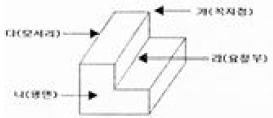
- 가
- 나
- 다
- 라
(정답률: 62%)
3과목: 기계제도
51. 그림과 같은 입체도의 제3각 정투상도로 가장 적합한 것은?
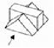
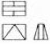
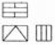
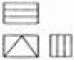
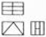
(정답률: 75%)
52. 다음 중 저온 배관용 탄소 강관의 기호는?
- SPPS
- SPLT
- SPHT
- SPA
(정답률: 49%)
53. 다음 중에서 이면 용접 기호는?
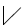
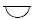
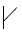
(정답률: 63%)
54. 다음 중 현의 치수 기입을 올바르게 나타낸 것은?
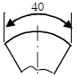
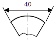
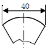
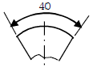
(정답률: 60%)
55. 다음 중 대상물을 한쪽 단면도로 올바르게 나타낸 것은?
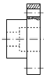
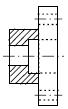
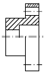
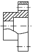
(정답률: 67%)
56. 다음 중 도면에서 단면도의 해칭에 대한 설명으로 틀린 것은?
- 해칭선은 반드시 주된 중심선에 45° 로만 경사지게 긋는다.
- 해칭선은 가는 실선으로 규칙적으로 줄을 늘어놓는 것을 말한다.
- 단면도에 재료 등을 표시하기 위해 특수한 해칭(또는 스머징)을 할 수 있다.
- 단면 면적이 넓을 경우에는 그 외형선에 따라 적절한 범위에 해칭(또는 스머징)을 할 수 있다.
(정답률: 57%)
57. 배관의 간략 도시방법 중 환기계 및 배수계의 끝 장치 도시방법의 평면도에서 그림과 같이 도시된 것의 명칭은?
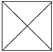
- 배수구
- 환기관
- 벽붙이 환기 삿갓
- 고정식 환기 삿갓
(정답률: 63%)
58. 그림과 같은 입체도에서 화살표 방향에서 본 투상을 정면으로 할 때 평면도로 가장 적합한 것은?
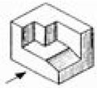
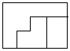
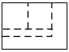
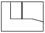
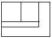
(정답률: 67%)
59. 나사 표시가 “L 2N M50×2 –4h“ 로 나타낼 때 이에 대한 설명으로 틀린 것은?
- 왼 나사이다.
- 2줄 나사이다.
- 미터 가는 나사이다.
- 암나사 등급이 4h 이다.
(정답률: 50%)
60. 무게 중심선과 같은 선의 모양을 가진 것은?
- 가상선
- 기준선
- 중심선
- 피치선
(정답률: 43%)